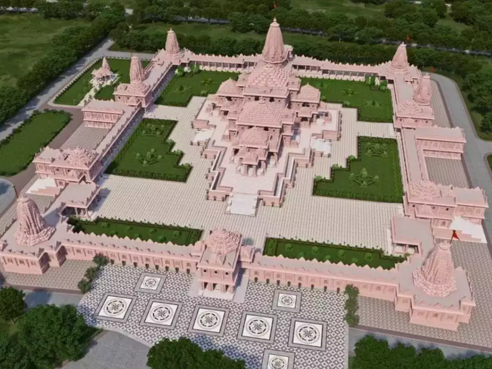
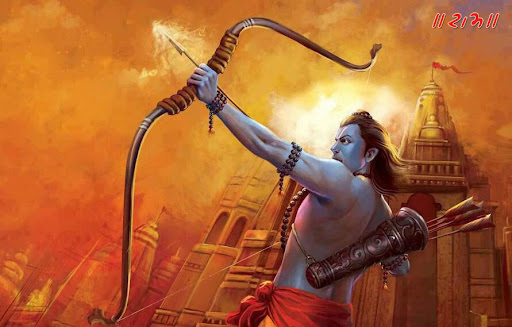

Ayodhya's Ram Mandir complex will be 'Atmanirbhar'
and have 70% green cover: How it will probbably look like

History of the land
According to Hindu tradition, the temple was first built by King Dasharatha, the father of Ram, and later renovated by King Vikramaditya in the 1st century BCE. In the 16th century, the temple was destroyed by the Mughal emperor Babur, who built a mosque, known as Babri Masjid, on the same site. In 1992, the mosque was demolished by Hindu activists, sparking inter-communal violence. In 2019, the Supreme Court of India gave the disputed land to Hindus for construction of a temple, while Muslims were given land elsewhere to build a mosque.

What makes it special?
- The birthplace of Lord Rama
- Total Area: 70 Acre (70% green Area),while Temple Area: 2.77 Acre
- made with High Grade “Rolled Compacted Concrete” without Steel
- The estimated age of the temple structure is 2500 years.
- The idols are made up of 60 million years old Shaligram Rocks, brought from the Gandaki River (Nepal)
- The sound of the bell can be heard up to a distance of 15 Km.
- Largest Temple in India: According to the Sompura Family who designed the temple’s structure, the height of the temple would be approximately 161 feet along with 28,000 square feet of area.
- As of January 10, 2024, the Ram Temple project has received over 5,500 crore rupees in donations.

More about Shri Ram
- He is a man of Dharma and puts it before anything or anyone else. This did make him look like a villain when he banished Sita (with a heavy heart) but it only tells how much he is dedicated to the bid, the greater good.
- No matter where he went people were just ready to follow him. He made friends out of enemies like Ratnakara (aka bearface) who became Sage Valmiki. Even his enemies respected his prowess. He convinced an entire army of Vanars and Bears (Rksas) to fight for his cause. His own people were willing to follow him into exile. Talk about love.
- It is mentioned in the Mahabharata that once Lord Shiva said that reciting the name of Rama thrice gives the grace equal to pronouncing the names of thousand deities